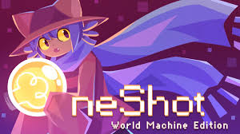
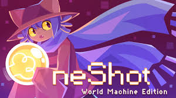
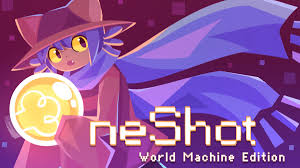
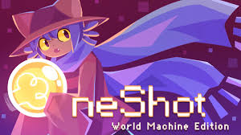

 

"En un mundo donde tus elecciones no importan... ¿o tal vez sí?". Acompaña a Kris, Susie y Ralsei en un viaje al Mundo Oscuro. Es la continuación espiritual de Undertale, destacando por su increíble música, combate por turnos con mecánicas de esquive y un humor que pasa de lo absurdo a lo emocional en un segundo.
"Solo tienes una oportunidad". En este juego, tú no eres el protagonista; tú eres el Dios que guía a Niko, un niño con ojos de gato, a través de un mundo agonizante para restaurar su sol. Es famoso por romper la "cuarta pared" e interactuar directamente con tu computadora (o consola) de formas que no te imaginas.
"Misión: Purificar el mundo". Tomas el control de El Bateador (The Batter), una entidad vestida de beisbolista con una misión sagrada pero inquietante. Es un RPG surrealista francés, conocido por su atmósfera minimalista, una banda sonora extraña y una historia que te hará cuestionar quién es realmente el héroe y quién el villano.